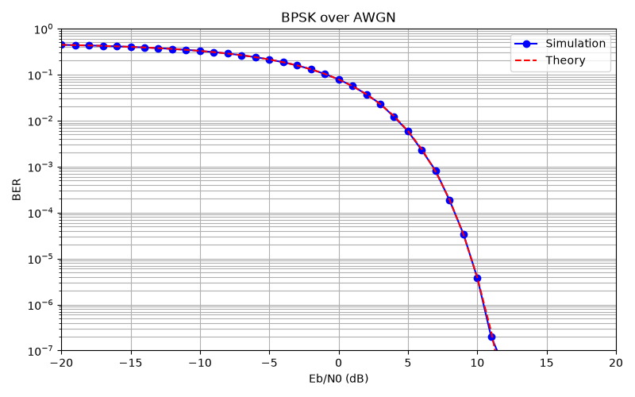
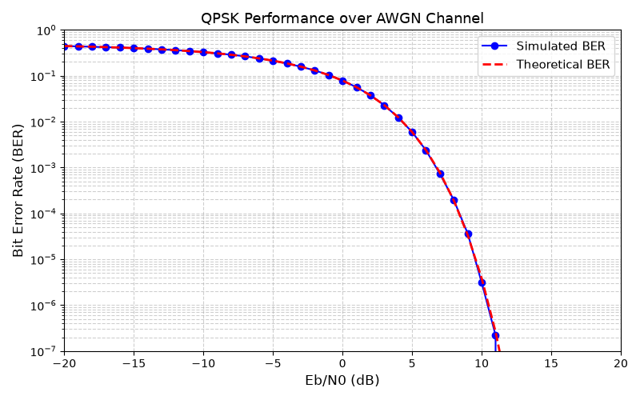
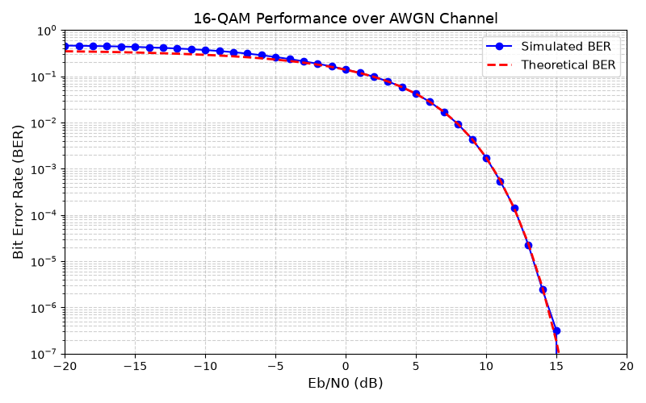
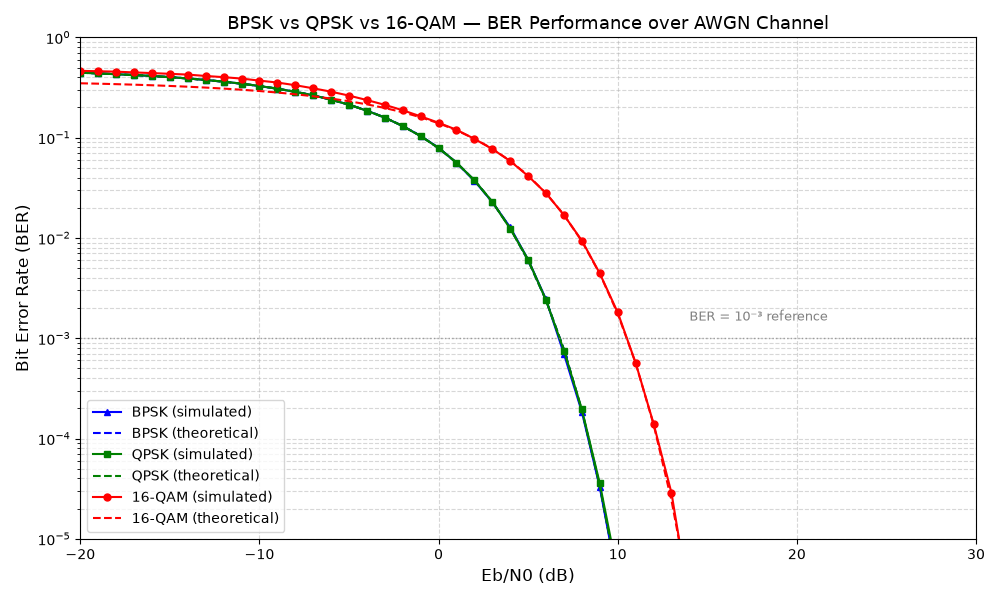
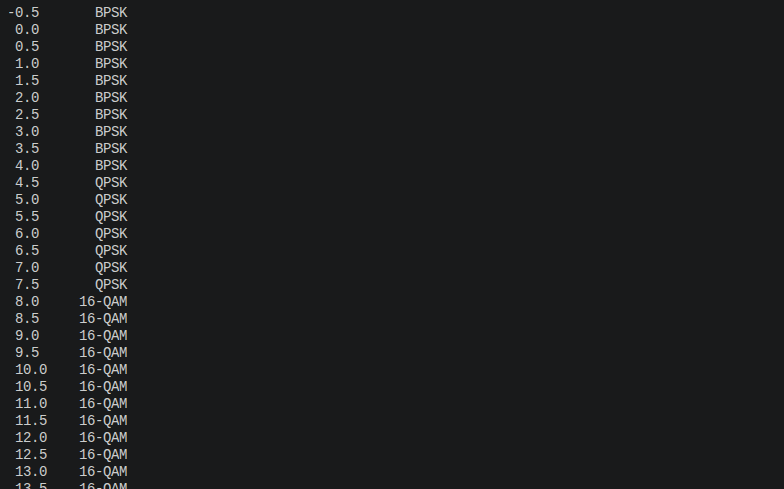
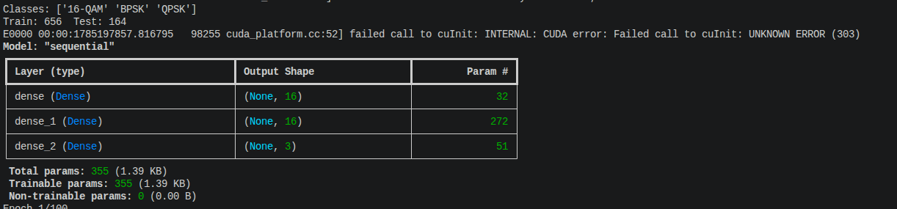
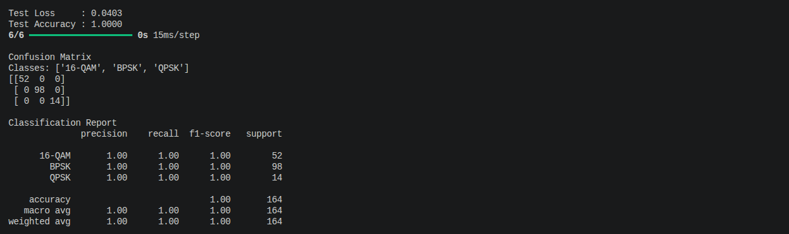
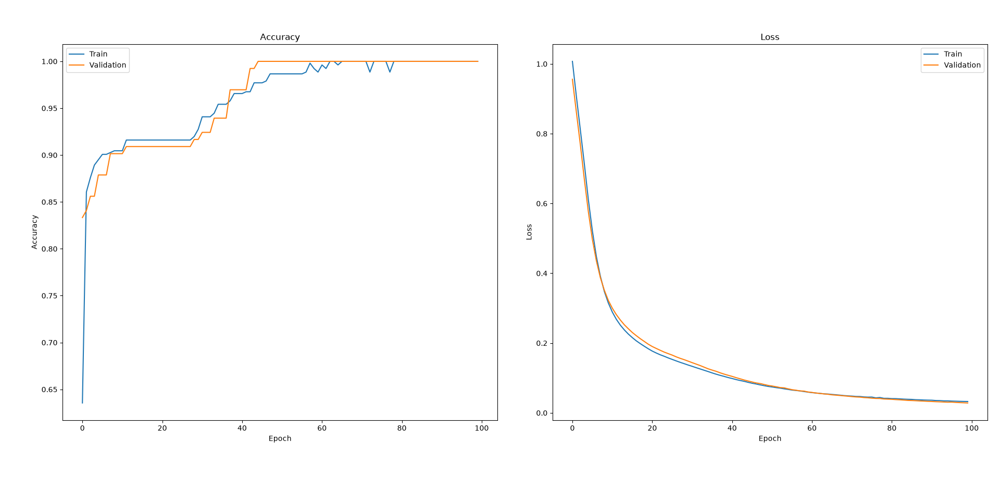

Project · Electrical & Electronics Engineering
Adaptive Modulation Selection using Machine Learning
A build log of my project: a neural network that learns to pick the best digital modulation scheme (BPSK, QPSK, or 16‑QAM) for a given channel SNR, trained on data generated from first‑principles Python simulations verified against communications theory. This page documents the process phase by phase, including the bugs found along the way and how each was diagnosed and fixed - bugs are as much a part of this log as the results.
Why this project
Real communication systems don't use a single fixed modulation scheme. 4G and 5G links constantly adapt - using robust, low‑throughput modulation when the channel is noisy, and switching to dense, high‑throughput modulation when the channel is clean. This project reproduces that idea end‑to‑end: simulate the physics, generate a labelled dataset from it, and train a small neural network to make the same switching decision a real transmitter would need to make. Also, it happens that my Signals and Communication/Microwaves lecturer: Eng S.N Manegene is a huge comms nerd and I would love to impress him and have him as my supervisor for this project should it work.
Phase 1 - Digital Modulation Simulations Done
Everything starts from first principles in Python, using Mathuranathan Viswanathan's Digital Modulations using Python as a reference for structure and the underlying theory, with the BER formulas and channel models re‑derived and verified rather than copied wholesale. You can find the book here: Digital Modulations using Python.
BPSK
The first building block: NRZ‑mapped BPSK symbols (0→−1, 1→+1), passed through an AWGN channel at a range of Eb/N0 values, demodulated with a simple zero‑threshold detector, and checked bit‑for‑bit against the transmitted stream to compute BER. The simulated BER curve was verified against the closed‑form theoretical formula:
BER = 0.5 * erfc( sqrt(Eb/N0) )Simulated and theoretical curves matched closely across the tested SNR range, confirming the implementation was physically correct.

Simulated BPSK BER (dots) matches theory (line) across the SNR range.
QPSK
QPSK reuses the BPSK modulator twice - bits are split into I and Q streams, each BPSK‑modulated, then combined into a complex symbol (I + jQ). Since QPSK carries 2 bits/symbol on independent I/Q axes with no BER penalty relative to BPSK, the two theoretical curves are identical.
Bug found: the initial simulated QPSK curve drifted away from theory at higher SNR while matching well at low SNR - a classic sign of a systematic (not statistical) error.
Diagnosis: when generating complex AWGN as noise_std * (randn() + 1j*randn()), the real and imaginary parts each contribute noise_std² of power, so the total complex noise power is double what the original BPSK‑derived formula assumed.
Fix: derive the noise standard deviation directly from the actual measured symbol energy rather than a hardcoded formula:
Es = np.mean(np.abs(symbols)**2) # measured, not assumed
k = 2 # bits per symbol
Eb = Es / k
N0 = Eb / EbN0
sigma = np.sqrt(N0 / 2)
noise = sigma * (np.random.randn(*symbols.shape)
+ 1j*np.random.randn(*symbols.shape))This same energy‑measured approach was then applied consistently across BPSK, QPSK and 16‑QAM.

Simulated QPSK BER (dots) matches theory (line) across the SNR range.
16‑QAM
16‑QAM maps 4 bits per symbol - 2 bits to an in‑phase amplitude level and
2 bits to a quadrature amplitude level, each drawn from
{-3, -1, +1, +3}. Demodulation uses three thresholds per axis
(-2, 0, +2) instead of BPSK/QPSK's single threshold.

Simulated 16‑QAM BER (dots) matches theory (line) across the SNR range.
Bug found (caught during a later review pass): two separate issues in the 16‑QAM code.
-
The theoretical BER formula was using coefficient
0.75instead of the correct Gray‑coded coefficient0.375(3/8), which meant the theory curve could nonsensically exceed 0.5 at low SNR. -
The bit‑to‑amplitude mapping (
00→-3, 01→-1, 10→+1, 11→+3) was not actually Gray‑coded - going from01to10flips both bits at once, so a single amplitude‑level slip caused by noise could flip 2 bits instead of 1, making the simulated BER worse than the (already‑correct) theory predicts.
Fix: corrected the theoretical formula and re‑ordered the mapping to true Gray order:
# Correct Gray-coded 16-QAM theoretical BER
BER = 0.375 * erfc( sqrt(0.4 * Eb/N0) )
# True Gray order: 00, 01, 11, 10 -> -3, -1, +1, +3
# (each adjacent transition now flips exactly one bit)Comparison - BPSK vs QPSK vs 16‑QAM
With all three schemes verified individually, a combined plot puts them on one figure using a single, wide SNR range so the comparison is fair. This is the plot that motivates the whole project: BPSK and QPSK track each other exactly (same BER, but QPSK carries double the data), while 16‑QAM needs roughly 6 dB more SNR to reach the same BER - in exchange for 4× the throughput of BPSK when the channel allows it.

BPSK and QPSK track each other exactly, while 16‑QAM needs roughly 6 dB more SNR to reach the same BER.
This SNR gap between the three curves is exactly what the neural network in Phase 3 learns to exploit: low SNR → BPSK, mid SNR → QPSK, high SNR → 16‑QAM.
Phase 2 - Dataset Generation Done
With verified simulations in place, the next step is to generate labelled training data. For a grid of SNR values, each modulation scheme is run for several independent trials, and the resulting BER values are used to assign a label - the modulation scheme that should be used at that SNR.
Labelling rule (priority given to the most spectrally efficient scheme that still meets a BER requirement):
BER_THRESHOLD = 1e-2
def get_best_modulation(ber_bpsk, ber_qpsk, ber_qam16):
if ber_qam16 < BER_THRESHOLD:
return "16-QAM"
elif ber_qpsk < BER_THRESHOLD:
return "QPSK"
else:
return "BPSK"Bug found: the first version of this function checked BPSK's threshold first, which meant that even at very high SNR (where 16‑QAM would work perfectly well), the function returned "BPSK" simply because BPSK's BER happened to be below the threshold too - wasting available channel capacity.
Fix: reordered the checks to prioritise the highest‑throughput scheme that still satisfies the BER requirement, falling back to BPSK only when nothing else qualifies (shown correctly in the snippet above).
500 rows were generated across an SNR sweep from −4 dB to 20.5 dB (10 trials per SNR point, 100,000 bits per trial). Grouping by SNR and looking at the assigned label confirms a clean transition:
-20 dB to 4.0 dB -> BPSK
4.5 dB to 7.5 dB -> QPSK
8.0 dB to 20.5 dB -> 16-QAM
Generated dataset showing the transition from BPSK to QPSK to 16-QAM as SNR increases.
Phase 3 - Neural Network ClassifierDone
A small multi‑layer perceptron (MLP) is trained to predict
Best_Modulation given the channel conditions:
Input layer : SNR_dB
Hidden layer 1: 16 neurons, ReLU
Hidden layer 2: 16 neurons, ReLU
Output layer : 3 neurons, Softmax (BPSK / QPSK / 16-QAM)The target leakage bug - the most important bug in this project
An early version of the pipeline experimented with feeding the model a
richer feature set: SNR_dB together with the measured
BER_BPSK, BER_QPSK, and BER_16QAM
values for that trial. This version reached exactly 100.00% test
accuracy almost immediately - a result that should always be
treated with suspicion rather than celebrated outright.
Diagnosis: the label Best_Modulation was
itself computed directly from BER_BPSK,
BER_QPSK, and BER_16QAM (see the labelling rule
above). Feeding those same BER values back into the model as input
features meant the network wasn't learning a real relationship - it was
just re‑deriving the label from its own ingredients. This is target
leakage: a subtle bug where information that was used to construct
the label is also present in the input features, producing results that
look excellent but generalise to nothing.
A parallel experiment during this same investigation restructured the pipeline to extract statistical features (energy, RMS, zero‑crossing rate, IQ correlation, magnitude entropy, etc.) directly from the received waveform, sidestepping BER entirely. That pipeline is closer to a different, related problem - Automatic Modulation Classification (AMC), where a receiver identifies which scheme is in use from the signal itself, with no cooperation from the transmitter. AMC is a valid and interesting project in its own right, but it isn't this project. The useful, unrelated bug fixes discovered during that detour (the Gray‑coding fix and the theoretical BER coefficient fix noted in Phase 1) were kept; the feature‑extraction pipeline itself was set aside to stay focused on adaptive modulation selection.
Fix: the classifier's input features were restricted to SNR_dB only. The BER columns remain in the saved CSV for inspection and plotting, but are never passed to the model:
FEATURE_COLUMNS = ["SNR_dB"] # the entire fix lives in this one line
X = df[FEATURE_COLUMNS].values
y = df["Best_Modulation"].valuesThis mirrors the real constraint a transmitter faces: it can estimate SNR ahead of time (via pilot symbols / channel sounding) but cannot know BER in advance without already having transmitted and decoded the data.
Results after the fix
With SNR_dB as the sole input, training now shows a genuine
learning curve - climbing gradually from around 40% accuracy in early
epochs, plateauing for a stretch while it works out the harder QPSK / 16‑QAM
boundary, and eventually reaching 100% test accuracy by epoch ~40–60. Unlike
the leaky version, this one earns its accuracy: the confusion matrix is
perfectly diagonal, and manual predictions at 2 dB, 7 dB, and 15 dB return
BPSK, QPSK, and 16‑QAM respectively, with graded confidence near the actual
decision boundaries rather than blind certainty everywhere.

Training and validation accuracy over epochs.

Confusion matrix showing the model's performance.

Training and validation loss over epochs.
The trained model, scaler, and label encoder are saved to disk
(modulation_classifier.keras, scaler.joblib,
label_encoder.joblib) so Phase 4 can load them directly rather
than retraining.
Phase 4 - Real‑Time Adaptive System In progress
This section is a placeholder for work currently underway. The plan: simulate a channel whose SNR drifts slowly over time (a random walk, representing something like a receiver slowly moving relative to a transmitter), feed the live SNR estimate into the trained classifier at each time step, and actually transmit data using whatever scheme it chooses. This adaptive system will be compared against two fixed baselines - always‑BPSK and always‑16‑QAM - run over the identical SNR trace, to produce a final throughput‑over‑time comparison plot. This page will be updated once that phase is complete.
Bug log
A consolidated summary of every bug encountered across all three completed phases, for reference.
| Phase | Bug | Fix |
|---|---|---|
| 1 - QPSK | Simulated BER drifted from theory at higher SNR; complex noise power was double what the formula assumed. | Derived noise σ from measured symbol energy (Es = mean(|symbols|²)) instead of a hardcoded formula. |
| 1 - 16‑QAM | Theoretical BER coefficient was 0.75 instead of the correct Gray‑coded 0.375. |
Corrected to BER = 0.375 * erfc(sqrt(0.4·Eb/N0)). |
| 1 - 16‑QAM | Bit‑to‑amplitude mapping wasn't true Gray code; a single amplitude slip could flip 2 bits. | Re‑ordered mapping to true Gray sequence: 00,01,11,10 → -3,-1,+1,+3. |
| 2 - Dataset generator | Labelling function checked BPSK's threshold first, wasting capacity at high SNR. | Reordered priority to favour the most efficient scheme that still meets the BER threshold. |
| 3 - Classifier | Target leakage: BER values used to construct the label were also fed to the model as input features, producing a meaningless 100% accuracy. | Restricted model inputs to SNR_dB only; BER columns kept in the dataset for inspection but excluded from training features. |